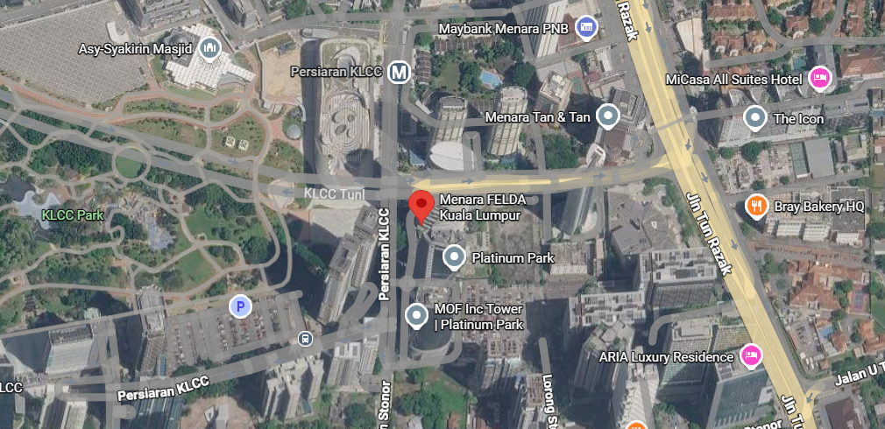
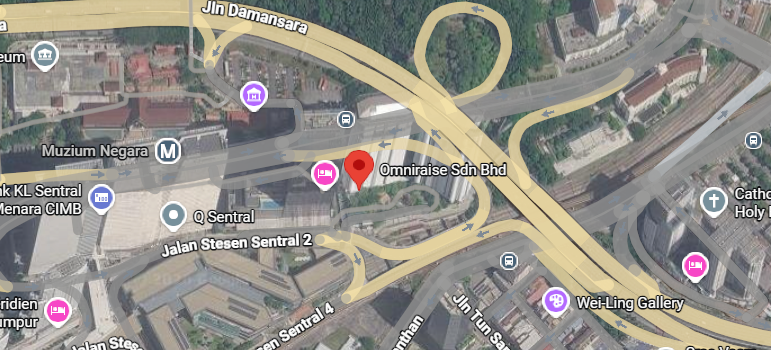

Career Journey
My Experience
From public engagement to digital content creation — building skills, one role at a time.
My professional journey has been shaped by a blend of public engagement and administrative experience. From representing non-profit organizations as a Fundraising Specialist to contributing to digital communication initiatives during my internship at FELDA, I have developed strong communication, multimedia production, and organizational skills. Each role has taught me the value of adaptability, ethical practice, and meaningful collaboration.
Work History
Career Timeline
Completed an internship with the Administration and Information Technology Department, where I supported digital communication initiatives and administrative tasks. Contributed to the creation of multimedia content, promotional materials, and document management resources to enhance workplace productivity and internal communication.
- Produced an instructional video demonstrating how to effectively use Microsoft OneDrive, including file management, file sharing, and storage cleanup.
- Edited and produced an Aidilfitri celebration video for the Administration and Information Technology Department to support internal engagement and communication.
- Designed posters and promotional materials for departmental activities and announcements.
- Assisted in organizing, updating, and managing data using Microsoft Excel to ensure accurate and well-maintained records.
- Collaborated with department staff to develop digital content that aligned with the organization's communication objectives.
Microsoft OneDrive
Microsoft Excel
Microsoft Office
Video Editing
Poster Design
Content Creation
Digital Communication
Multimedia Production
Team Collaboration

Worked as a Fundraiser representing two leading non-profit organizations, the National Kidney Foundation (NKF) and Greenpeace Malaysia. Engaged with the public to raise awareness, encourage community support, and promote long-term donation programs while maintaining professional communication and ethical fundraising practices.
- Represented the National Kidney Foundation (NKF) and Greenpeace Malaysia in public fundraising campaigns.
- Educated the public on healthcare, environmental sustainability and the importance of supporting charitable organizations.
- Engaged with diverse audiences in shopping malls and other public venues to promote awareness and monthly donation programs.
- Built positive relationships with potential donors through effective communication and professional customer engagement.
- Maintained high ethical standards while representing both organizations and achieving fundraising objectives.
- Promoted to Fundraising Specialist within one month for outstanding performance and consistently exceeding targets.
- Achieved 1st Place in the Top 10 Fundraisers ranking for the National Kidney Foundation (NKF) campaign with a 100% performance rate.
- Secured 1st Place in the Top 10 Fundraisers ranking for the Greenpeace Malaysia campaign with a 66.67% conversion rate.
- Ranked among the Top 10 Fundraisers (Under 30 category), demonstrating strong communication, leadership and public engagement skills.
Public Speaking
Fundraising
Communication
Customer Engagement
Persuasive Presentation
Relationship Building
Leadership
Teamwork
Public Relations

Technical Proficiency
Skills & Expertise
A curated overview of the technologies I work with daily — built through years of hands-on projects and continuous refinement.
The only way to do great work is to love what you do.
— Steve Jobs